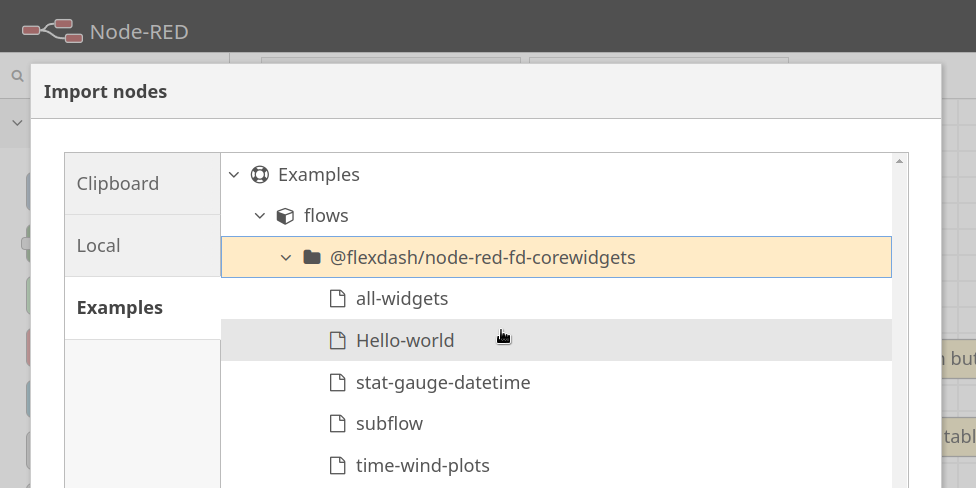
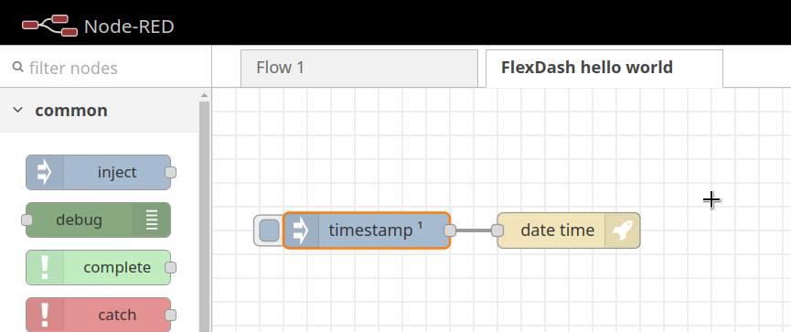
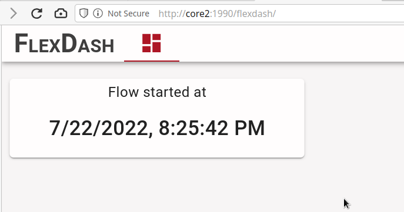
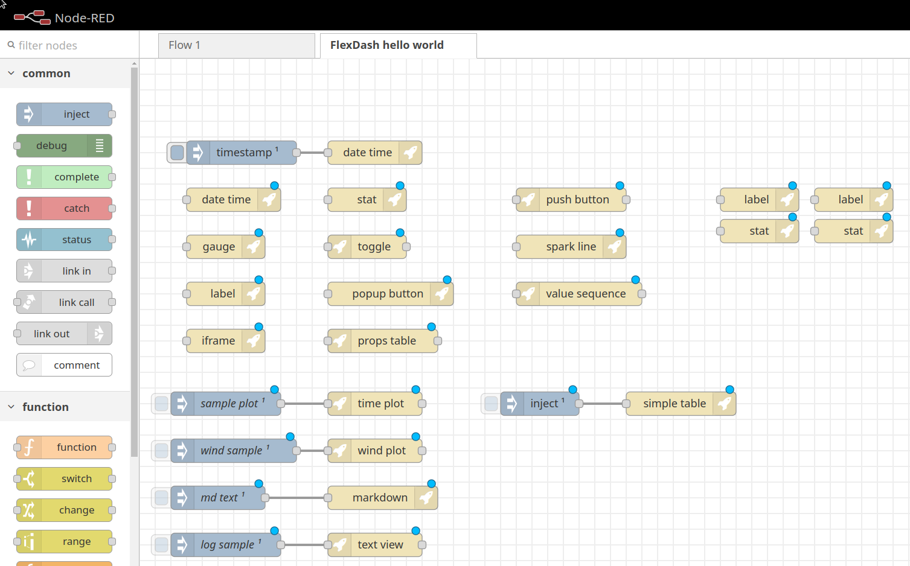
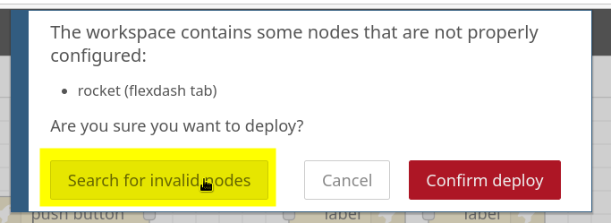
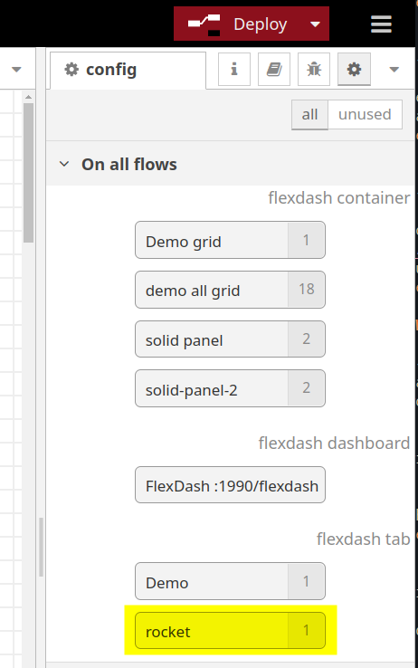
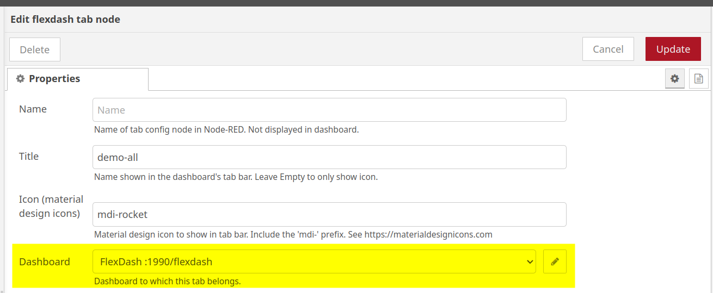
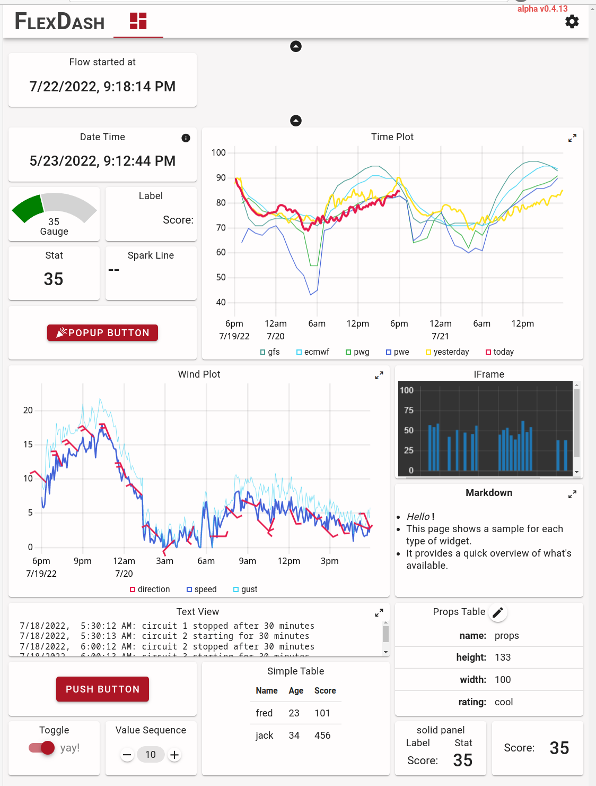

Examples
The examples are easy to run as long as the Hello World example is run first!
It creates a dashboard config node that the other examples "hook into".
If you do not run Hello World first you have to create these two config nodes yourself
(not a big deal).
Here is how it ought to look.
Hello World Example

Use the "import" feature in the Node-RED editor (in the top-right menu)
to install the "hello world" example, from @flexdash/node-red-corewidgets.

When the import completes you should have the following flow with an inject node and a date-time widget to display the timestamp.

Open another browser tab with the FlexDash dashboard, typically
http://localhost:1880/flexdash, the host & port being the
same you use for the Node-RED flow editor and just with /flexdash as path.
All Widgets Example
The all-widgets example shows one of each built-in widget so you get an overview of what's available. Import the flow using Node-RED's "import" feature as you did for the hello-world example.

This is about how it looks after the import if you import the example into the same flow as the hello-world example.
You need to associate the flexdash tab config node used by all the new example
widgets with the flexdash dashboard imported with the hello-world example (or create
a new dashboard if you don't have one yet):

- click on deploy and observe the warning message
- click on "search for invalid nodes" and select the (or one of the) flexdash tab nodes that are invalid

- the appropriate config node should be highlighted for you (flashing red outline)
- double-click the config node to edit

- confirm that the correct dashboard has been selected (should be automatic if you have only one)
- click update and then deploy again

Switching to the FlexDash browser tab you should see a dashboard similar to this.
Next Steps
- The other examples show variations for each of the widgets.
- Read about FlexDash's core concepts.
- Add some widgets and feed them data, see the "info" tab in the Node-RED flow editor for help on each of the widgets.